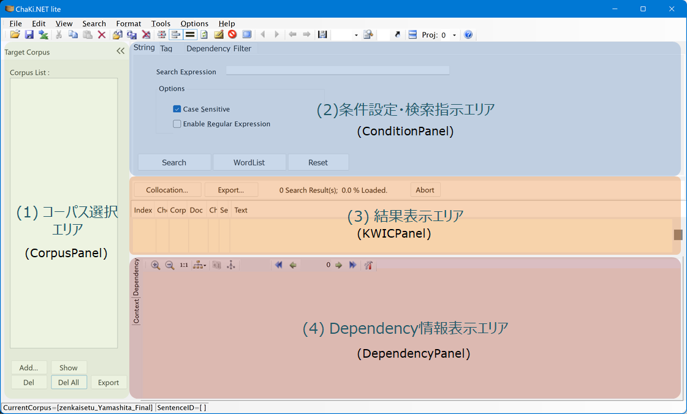

画面各部の説明
アプリケーション起動後のウィンドウの状態は下図のようになっています。
(1) コーパス選択エリア
検索対象とするコーパスを選択します。
(2) 条件設定・検索指示エリア
条件を入力し、検索を開始します。検索タイプには以下の3種類があります。
- 文字列検索(StringSearch): 文字列をキーとしてその文内出現を検索
- 語属性検索(TagSearch): 語とその属性をキーとしてその文内出現を検索・またはパターン数をカウント
- Dependency検索(DependencySearch): 語/文節の属性および依存関係をキーとしてその文内出現を検索・またはパターン数をカウント
(3) 検索結果表示エリア
検索結果をSentence表示・KWIC表示・パターンカウントリストの形で表示します。
(4) Depedency情報表示エリア
指定した文内の依存関係を表示します。（タブにより前後の文を表示するContext Panelに切り替えられます。）